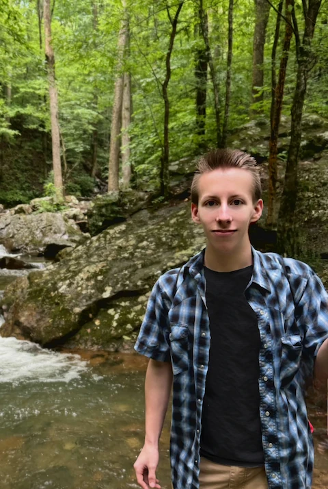
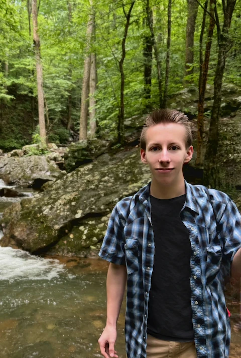

Hi again, I'm Will.
I’m a web developer living in Crossville, Tennessee, interested in how people and software can work together to make life better. I'm currently doing freelance web development on the side, but while I'm at my full time job, I am a lab technician at Mizkan.
My journey into web development began at age 15, with my father's boss asking me to create a website for his business. Eventually, this spark transformed into a fascination for how websites worked and a desire to create my own digital experiences. Over the years, I've honed my skills in HTML, CSS, JavaScript, and various frameworks like React. Each project I undertake is an opportunity to learn, innovate, and push the boundaries of what's possible on the web.
As a developer, I enjoy being a generalist with a focus on craft and prototyping. Inspiration and creation are at the heart of everything I do. I thrive on the challenge of solving complex problems and turning ideas into reality. Whether it's developing a sleek portfolio site or a robust web application, I am committed to delivering exceptional results that exceed expectations.
I have had the opportunity to work on a handful of projects, primarily in front-end web development, such as for the non-profit organization AMCA (Asociación de Música Country Argentina/Argentina's Country Music Association.) Click here to read more about my experience working with AMCA.
Outside of tech, I love medicine (I previously pursued a bachelor's degree with a major in pre-professional medicine in college) and I love connecting with nature and people.
I am always excited to take on new projects and collaborate with like-minded individuals. If you're looking for a dedicated web developer to bring your ideas to life, let's connect and create something amazing together! Never hesitate to reach out.